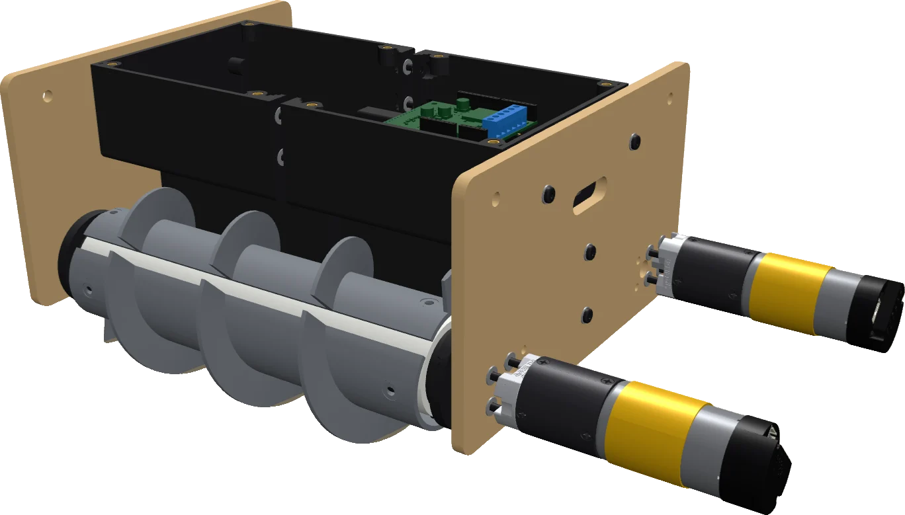
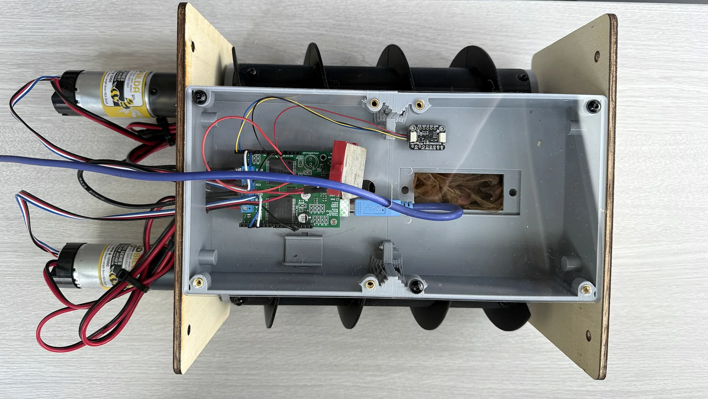
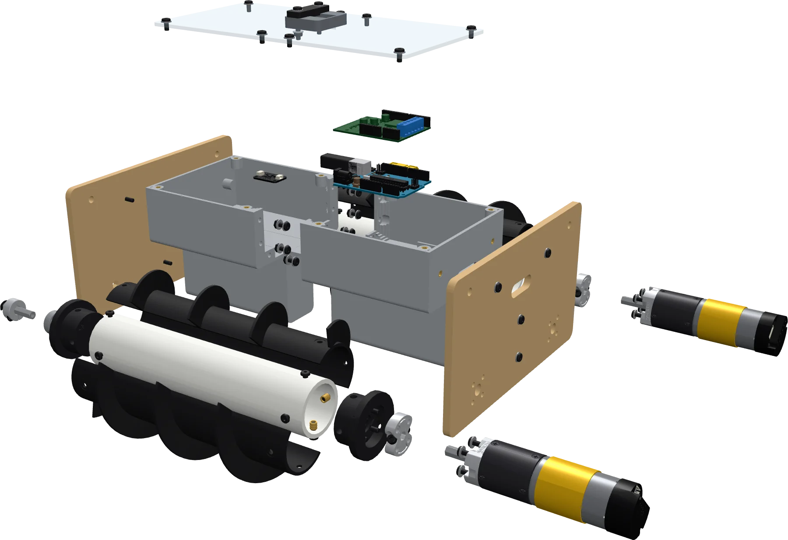
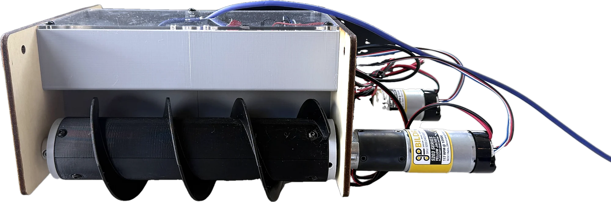
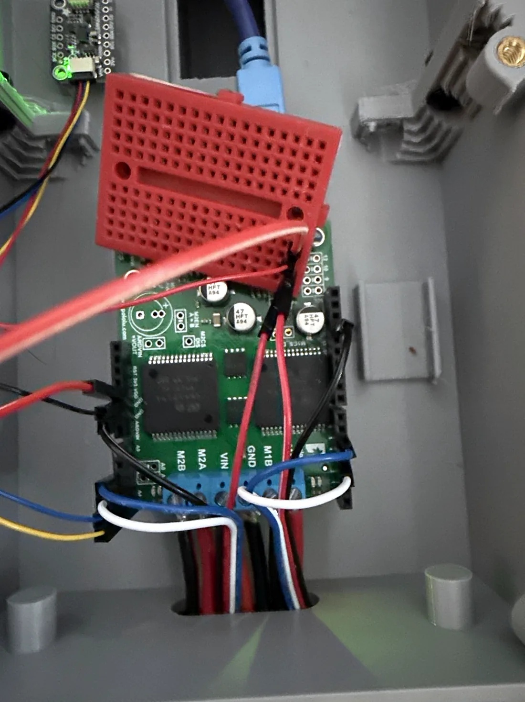
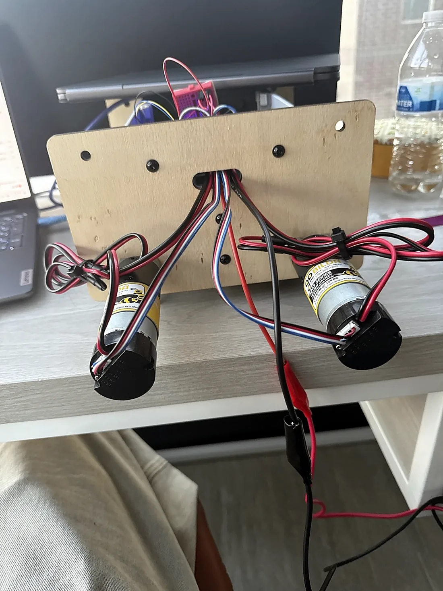
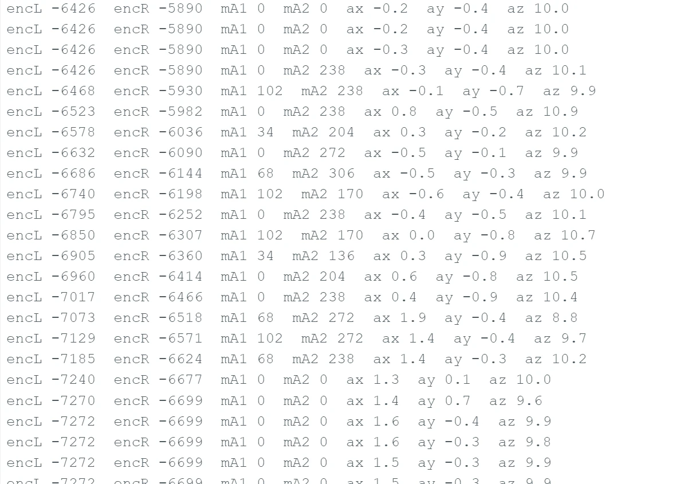
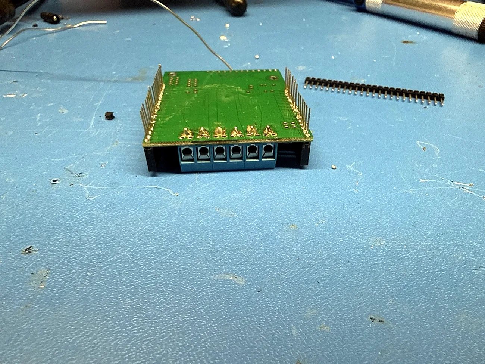

Controller
Arduino Uno
Powered over USB, kept apart from the 12 V motor supply. Prints a log line every 100 ms at 115,200 baud.
P1 · Built and bench-tested
A robot that drives on stored corn and breaks up crusts, so nobody climbs into the bin. I designed, printed, wired and bench-tested the first rover, 397 mm long.
Loading the 3D model
Follow the wire for the build
01 · The electronics
Off-the-shelf boards that I wired, tested and debugged. The circuit boards I designed myself are on the research page.
Wired by me
Used by the shield
Controller
Powered over USB, kept apart from the 12 V motor supply. Prints a log line every 100 ms at 115,200 baud.
Motor driver
Left on its default pins. Drives both motors at 20 kHz and reports each one's current and faults.
Motors
117 rpm at the output shaft, one motor for each drum.
Encoders
Decoded on every edge with pin-change interrupts and a lookup table: 1,425 counts per output turn.
Tilt sensor
On the I2C bus. Flat on the bench it reads 10.0 m/s² vertical.
Power
Current limit set to 3 A. It stands in for the tether the rover would run on in a bin.


02 · What it is
Every part is sized from the vendors' own CAD files, so the model above is the rover I built.

03 · How it moves
Left and right drums have opposite threads. The direction each one spins decides where the rover goes.
Mode 1
The drums spin opposite ways and their threads push together.
Mode 2
The drums spin the same way and the rover rolls on them.
Mode 3
One drum stops and the other swings the rover round it.
My part
I did this rover end to end: the CAD in Python, six plates of printing, the wiring and the first power-up. It has run on a bench. It has not driven on corn yet.
04 · The build
PETG body and drum sleeves from a Bambu P2S. Plywood end plates and an acrylic lid cut at Purdue's Bechtel Innovation Design Center.



05 · First test
Bench test at 25% power, logging encoder counts, motor current and tilt about ten times a second.

06 · What went wrong
Reworked it to 2.65 mm, then scanned every print file for thin walls.
Added a screwed hatch. Supports come out, ballast pours in.
Counted them with pin-change interrupts instead.
Found cold joints on six power terminals and reflowed them.
